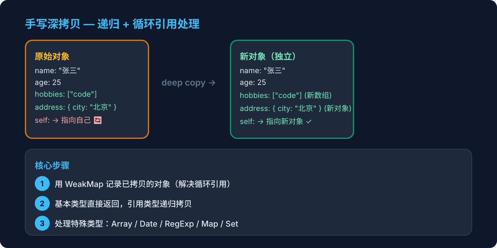

第1周 · JavaScript 深度 · 周末动手写

Object.assign 是深拷贝还是浅拷贝？
这种方式有什么缺陷？
{}
const obj = {
fn: () => {},
undef: undefined,
date: new Date(),
reg: /abc/
}
JSON.parse(JSON.stringify(obj))
// → { date: "2026-04-03T...", reg: {} }
// fn 和 undef 直接消失了！date 从 Date 对象变成了字符串！function deepClone(obj) {
if (obj === null || typeof obj !== 'object') return obj
const clone = Array.isArray(obj) ? [] : {}
for (const key in obj) {
if (obj.hasOwnProperty(key)) {
clone[key] = deepClone(obj[key])
}
}
return clone
}具体例子：
const obj = { name: "test" }
obj.self = obj // obj.self 指向 obj 自身
deepClone(obj)
// ❌ RangeError: Maximum call stack size exceeded
调用链：deepClone(obj) → deepClone(obj.self) → deepClone(obj.self.self) → ...
self 指向 obj 自身，递归永远不会停，直到栈溢出。Step 2 用 WeakMap 记录已拷贝的对象来解决。
function deepClone(obj, map = new WeakMap()) {
if (obj === null || typeof obj !== 'object') return obj
if (map.has(obj)) return map.get(obj)
const clone = Array.isArray(obj) ? [] : {}
map.set(obj, clone)
for (const key in obj) {
if (obj.hasOwnProperty(key)) {
clone[key] = deepClone(obj[key], map)
}
}
return clone
}为什么用 WeakMap 而不是 Map？
function deepClone(obj, map = new WeakMap()) {
if (obj === null || typeof obj !== 'object') return obj
if (map.has(obj)) return map.get(obj)
// 处理特殊对象类型
if (obj instanceof Date) return new Date(obj)
if (obj instanceof RegExp) return new RegExp(obj)
const clone = Array.isArray(obj) ? [] : {}
map.set(obj, clone)
// Reflect.ownKeys 可以遍历 Symbol 属性
for (const key of Reflect.ownKeys(obj)) {
clone[key] = deepClone(obj[key], map)
}
return clone
}Object.getOwnPropertyNames(obj).concat(Object.getOwnPropertySymbols(obj))，可以遍历包括 Symbol 在内的所有自有属性。
"深拷贝我会分三步来写。
第一步，基础版：递归遍历对象，遇到原始类型直接返回，遇到引用类型就创建新对象递归复制。
第二步，处理循环引用：用 WeakMap 记录已经拷贝过的对象，遇到重复的直接返回缓存。选 WeakMap 是因为它的 key 是弱引用，不会内存泄漏。
第三步，处理特殊类型：Date 和 RegExp 需要用各自的构造函数重新创建。用 Reflect.ownKeys 代替 for...in 来遍历 Symbol 属性。
实际项目中如果不需要处理特殊场景，通常用 structuredClone（浏览器原生 API）或者 lodash 的 cloneDeep。"
手写第二步（WeakMap 版），目标 15 分钟内写完。